Formulaire et méthodes- Séries numériques
Etudier la série de terme général (STG) 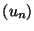, c'est étudier la limite des sommes partielles 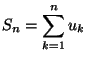. On dit que la série converge si 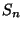 admet une limite.
Soit
 . Alors 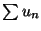 converge
si, et seulement si, 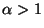. Cette série s'appelle série de Riemann.
. Alors 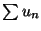 converge
si, et seulement si, 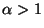. Cette série s'appelle série de Riemann.
Si la série de terme général 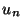 converge, alors 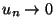. En revanche, ce n'est pas parce que tend vers 0 que la série de terme général converge. Le cas de 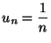 est frappant!
Quels sont les critères de convergence quand 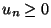?? On remarque que la suite des sommes partielles est croissante. Donc, elle converge si, et seulement si, elle est majorée. Ainsi :
- Emploi des équivalents :
Si 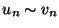 et , alors les séries de terme général et 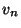 sont de même nature.
Ce critère s'emploie généralement quand on a des séries assez compliquées, on cherche un équivalent simple à l'aide de développements limités : 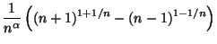. - Autres relations de comparaison :
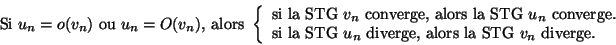
- Règle de Cauchy :
On suppose que , et que 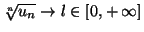. Alors :- Si 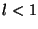, la série de terme général converge.
- Si 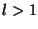, la série de terme général diverge.
- Si 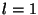, on ne peut pas conclure.
- Règle de D'Alembert :
On suppose que $u_n>0$, et que 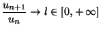. Alors :- Si , la série de terme général converge.
- Si , la série de terme général diverge.
- Si , on ne peut pas conclure.
- Comparaison avec une intégrale : Si
 est continue par morceaux, positive, décroissante sur
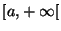, et si on définit par
est continue par morceaux, positive, décroissante sur
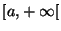, et si on définit par  , alors la STG et
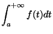 sont de même nature. Il est bon de savoir redémontrer ce résultat, qu'on doit pouvoir retrouver à partir d'un petit dessin, et d'un encadrement de l'intégrale. C'est par exemple ainsi
que l'on prouve facilement la convergence ou la divergence des séries
de Riemann, ou celle des séries de Bertrand :
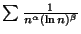 converge ssi ou et 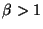.
, alors la STG et
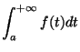 sont de même nature. Il est bon de savoir redémontrer ce résultat, qu'on doit pouvoir retrouver à partir d'un petit dessin, et d'un encadrement de l'intégrale. C'est par exemple ainsi
que l'on prouve facilement la convergence ou la divergence des séries
de Riemann, ou celle des séries de Bertrand :
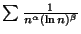 converge ssi ou et 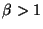.
En outre, la comparaison à une intégrale fournit un encadrement du reste, ou des sommes partielles, qui peut être utile dans le cas où on s'intéresse à la vitesse de convergence, et à une valeur approchée de la limite :
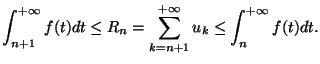
- Convergence absolue : A tester avant toute chose.
- Règle
 :
:
- S'il existe tel que
 quand
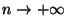, alors la série de terme général converge absolument.
quand
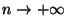, alors la série de terme général converge absolument. - S'il existe
 tel que
tel que
 quand
, alors la série de terme général diverge.
quand
, alors la série de terme général diverge.
- S'il existe tel que
- Critère des séries alternées :
On considère une série de terme général telle que :- 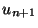 est de signe opposé à .
- 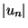 décroît, et est de limite nulle en
 .
.
- Décomposition : Par des développements limités, essayer de décomposer une série en séries plus simples, et regarder la convergence de ces séries.
- Transformation d'Abel : C'est l'analogue de l'intégration par parties pour les intégrales impropres, et elle s'emploie pour les séries du type
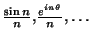.
Si 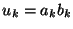, on écrit 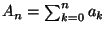, ce qui donne 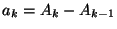. Alors :
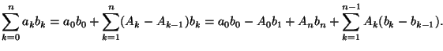On conclut le plus souvent quand :- est borné.
- 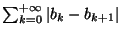 est absolument convergente, et 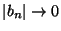.
Bien souvent, on cherche à obtenir une valeur approchée de la limite d'une série convergente. Il faut pouvoir savoir à quelle vitesse on s'approche de la limite. Soit 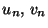 des suites à termes positifs. On note :
| 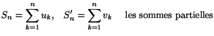 | |||
| 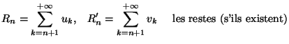 |
- Cas de la convergence : on compare les restes. On suppose que
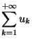 converge :
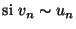 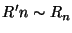 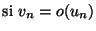 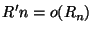 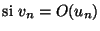 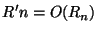 - Cas de la divergence : on compare les sommes partielles. On suppose que
diverge :
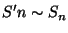 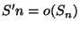